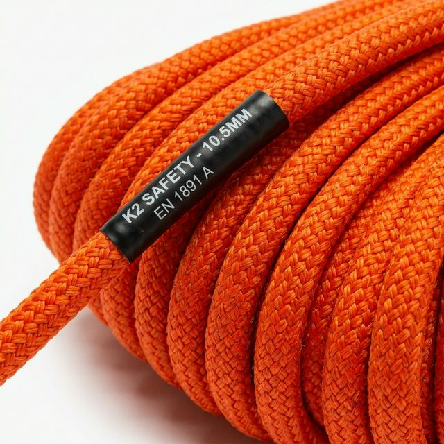

Corda Polipropileno (PP)
Material leve de ótima resistência, não absorve água. As cordas PP são ideais para amarração de lonas em cargas, construção civil, agropecuária e artesanato. Produto mais macio, com mais brilho e maior mix de cores.
| Bitola | Embalagem | Metragem | Carga Ruptura (kgf) |
|---|---|---|---|
| 3 mm | Carretel | 625 m | 126,63 |
| 4 mm | Carretel | 360 m | 164,03 |
| 5 mm | Carretel | 250 m | 308,85 |
| 6 mm | Carretel | 165 m | 371,30 |
| 8 mm | Carretel | 258 m | 762,52 |
| 10 mm | Carretel | 190 m | 905,96 |
| 12 mm | Carretel | 140 m | 1183,58 |
Cores disponíveis: Amarelo, Azul, Branca, Multicor, Preta, Verde, Vermelha

Corda Poliamida (PA)
Conhecido como Nylon Seda, a Poliamida é um material muito resistente e utilizado em atividades de risco como na construção civil: corda de segurança, cadeira suspensa e trava-quedas (NR 18). Alta resistência à abrasão e produtos químicos.
| Bitola | Tipo | Aplicação Principal |
|---|---|---|
| 8 mm | Trançada | Cadeira suspensa / Segurança |
| 10 mm | Trançada | Trava-quedas / NR 18 |
| 12 mm | Trançada | Linhas de vida |
| 14 mm | Trançada | Içamento / Içamento e resgate |
Corda Polietileno (PE)
Chamado de "Nylon", o Polietileno é um material leve com grande aplicação na pesca — usado para redes, cabos de arrasto e atracação. Na pecuária, para fabricação de cabrestos e rédeas. Material de alta qualidade, indicado para o setor náutico.
| Bitola | Embalagem | Metragem |
|---|---|---|
| 3 mm | Rolo | 200 m |
| 4 mm | Rolo | 150 m |
| 6 mm | Rolo | 100 m |
| 8 mm | Rolo | 75 m |
| 10 mm | Rolo | 50 m |
Corda Poliéster PET Reciclado
Tendo sua produção voltada para o apelo ecológico, este material é produzido a partir das embalagens de garrafa PET. O produto possui menor valor agregado, mas é uma excelente opção sustentável. Utilizado na agropecuária, construção civil e artesanato.
| Bitola | Tipo | Observação |
|---|---|---|
| 4 mm | Trançada | Uso geral / artesanato |
| 6 mm | Trançada | Agropecuária |
| 8 mm | Trançada | Construção civil leve |
Corda Polietileno Reciclado (PER)
Material leve e que não absorve água, usado no setor agropecuário e principalmente no setor de mineração. Excelente custo-benefício para aplicações industriais que exigem resistência e durabilidade em ambientes agressivos.
| Bitola | Embalagem | Setor |
|---|---|---|
| 6 mm | Rolo | Agropecuária / Uso geral |
| 8 mm | Rolo | Mineração / Industrial |
| 10 mm | Rolo | Mineração pesada |
| 12 mm | Rolo | Industrial / Ancoragem |

Corda Técnica K2
De acordo com a NBR 15986, é indicada para as mais diversas atividades verticais, seja na área esportiva ou profissional. A Corda K2 é recomendada para praticantes de rapel, resgate e trabalhos em altura. Fabricada com os mais altos padrões de segurança.
| Bitola | Tipo | Carga Ruptura | Norma |
|---|---|---|---|
| 10 mm | Trançada estática | 2.200 kgf | NBR 15986 |
| 11 mm | Trançada estática | 2.600 kgf | NBR 15986 |
| 12 mm | Trançada estática | 3.100 kgf | NBR 15986 |